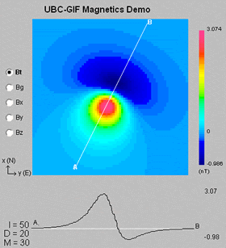
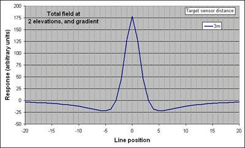

Total field strength, 10m from target.
Total field strength, 11m from target.
Vertical gradient, no change in scale.
Vertical gradient, full scale.

Total field line profile at 3m elevation
Total field line profile at 4m elevation
Difference between these two - the vertical gradient
All three on one image.
Above:
Line profiles over a vertically oriented dipole.
Left:
The total field and gradient responses above
a dipolar magnetic anomaly are shown for a location
where inclination is 50°, and declination is 20°.